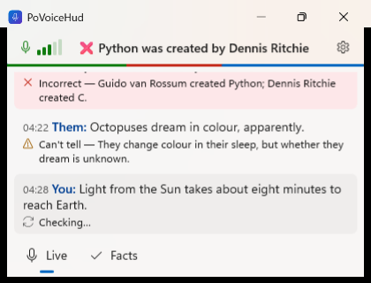
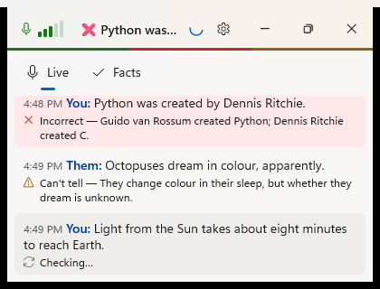
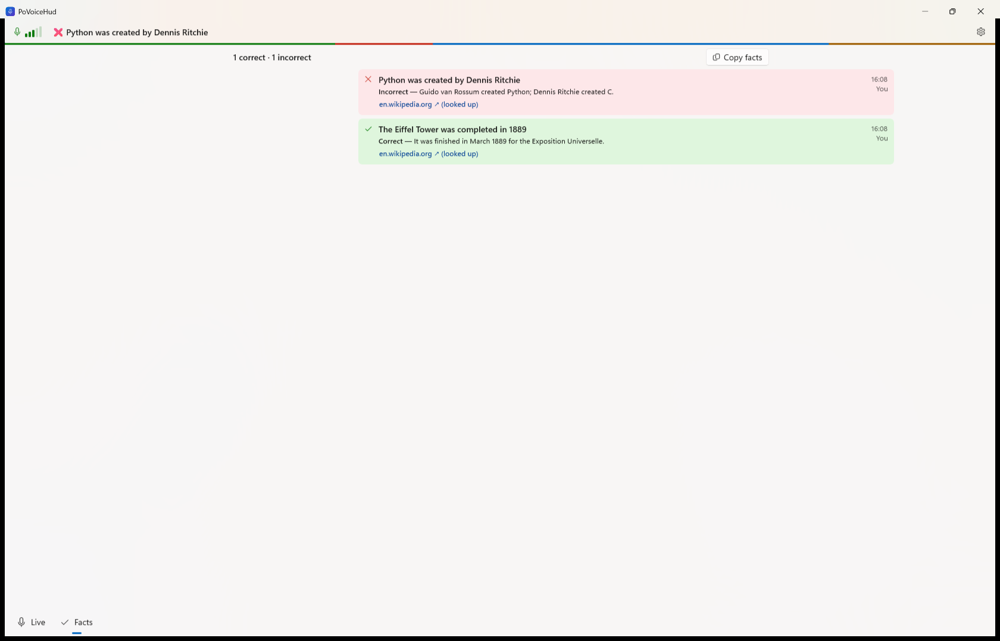
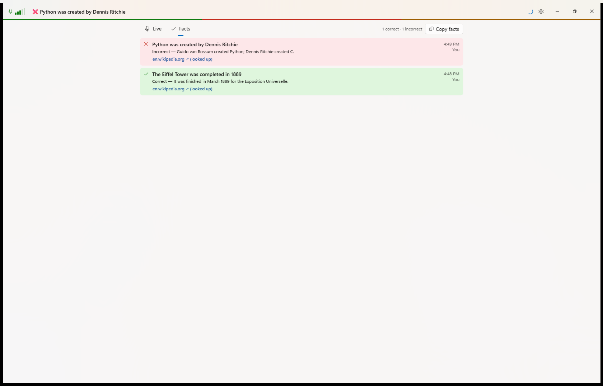
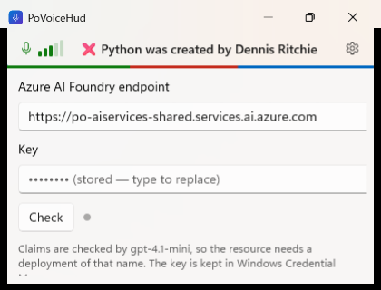
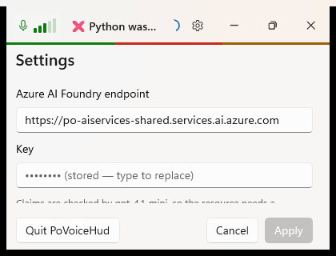
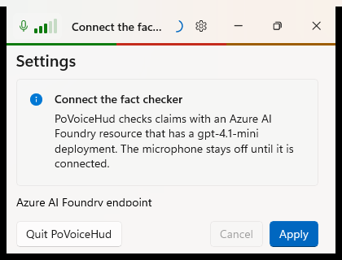

Review fixes: compact window, Settings page, setup first
Debug build with the --demo forms, captured with PrintWindow at 420 × 320 (the minimum) and 1680 × 1077. "Before" is commit b5e16bc; "after" is the working tree on 2026-10-20.
Live at the minimum size
Before

123- A separate title bar, 32 px.
- The header, 44 px, below it.
- Live and Facts at the bottom, about 45 px.
After

1234- One 48 px row: the header is drawn into the title bar and the window is dragged by the headline.
- A small spinner while a claim is checked; the blue bar no longer sits on the verdict bar.
- Live and Facts at the top, sharing a row with Facts' count and Copy facts.
- Clock times, the same as on Facts, instead of minutes:seconds that restarted at every unmute.
Facts on a wide window
Before

12- The count and Copy facts…
- …out of line with the list below.
After

12- Everything sits in one 900 px column.
- The count and Copy facts end where the list ends.
Settings and first run
Before: a flyout

1- Check, then changes applied when the flyout closed, which included switching to the Azure portal to copy the key. Every change reloaded Whisper.
After: a page with Apply and Cancel

12- Cancel (or Esc, or ⚙) puts back what was applied.
- Apply checks a new endpoint or key with one call first. The endpoint, key and Wikipedia only replace the checker.
After: first run

123- The header says what to do.
- Nothing is heard until an endpoint and key pass the check.
- Nothing to cancel back to.